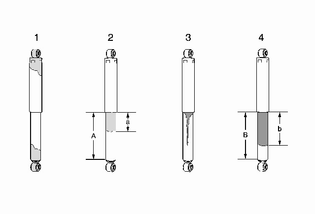

滑柱和减振器的检查
注意:
执行以下检查程序时，不必将减振器总成从车辆上拆下。
注意:
下减振器管的上部分有一薄层油膜，这是正常的。出现这种情况时，无须更换减振器。

状况 1
并非来源于轴密封件的残留润滑油或油液仅位于减振器底部或顶部时，这不是与减振器相关的故障。不需更换减振器，查找其他外部泄漏点。
状况 2
来源于轴密封件的薄油膜/残留油液流至下减振器缸筒（A）的约 1/3（a）或更小的区域内，这是正常现象。不需更换减振器。
状况 3
来源于轴密封件的油从下减振器缸筒滴下或流下，这是异常现象。更换减振器。
状况 4
来源于轴密封件（B）的极度潮湿的油膜覆盖下减振器缸筒的 1/3 以上的区域（b），这是异常现象。更换减振器。
检查
1.
确认存在客户报修故障。如报修故障存在，则继续进行下一步。如果报修故障不存在，则车辆运行正常。
注意:
执行以下检查程序时，不必将减振器总成从车辆上拆下。
2.
举升并顶起车辆。参见
举升和顶起车辆
。
3.
目视检查每个减振器是否有外部漏油。参见以下情况 1、2、3 和 4，进行目视检查。
•
如果发现情况 1 或 2 ，则继续进行步骤 4。
•
如发现情况 3 或 4，则更换减振器。
4.
如果装备电子悬架控制系统，则确保系统工作正常。参见“诊断起点－电子悬架控制”。
5.
用手来回抬起和压下车辆的每个角 3 次。将双手从车辆上移开。如果车角上下动作超过 2 次来回，则更换减振器。如果减振器上下动作没有超过 2 次来回，则不需要修理。